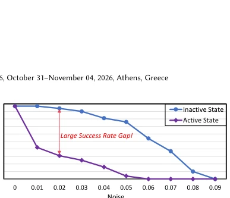
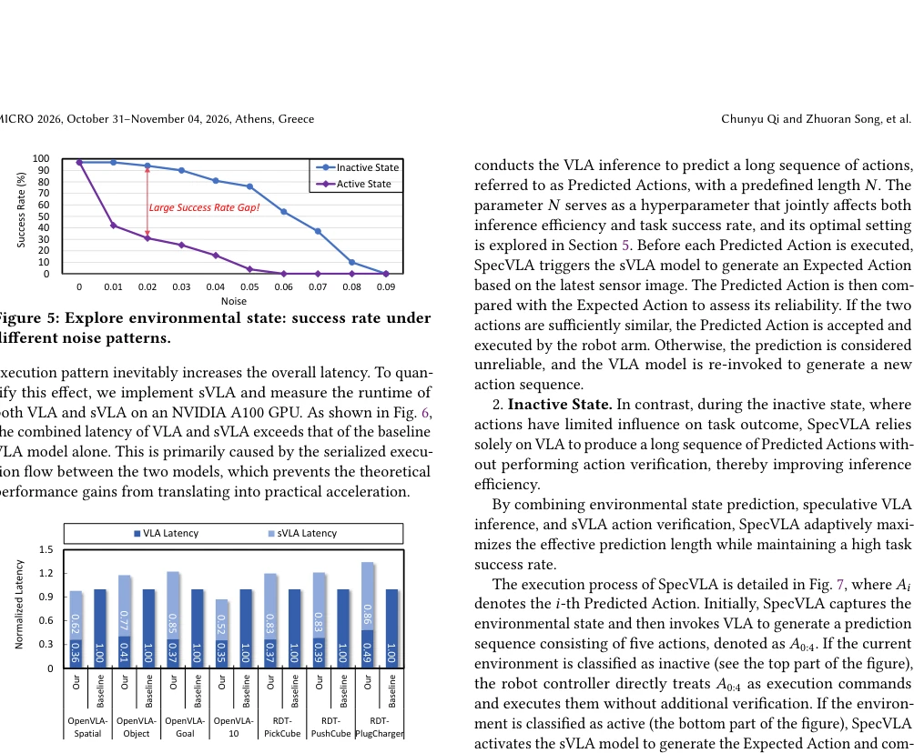
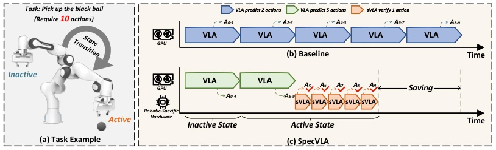
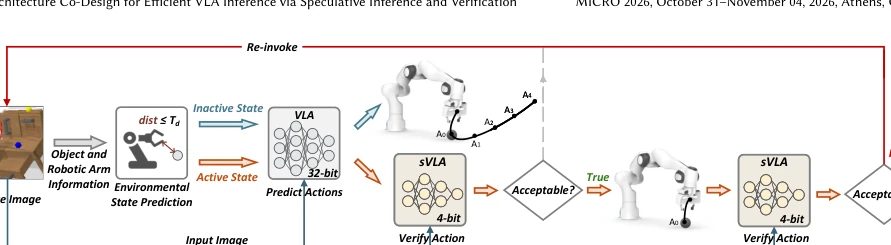
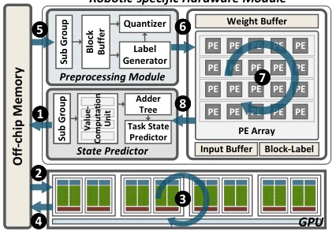
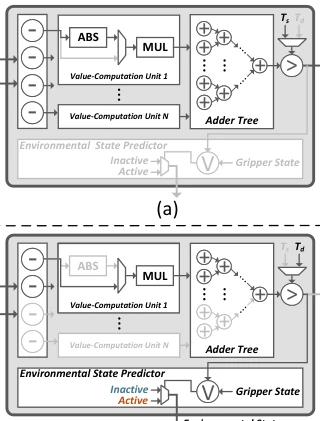
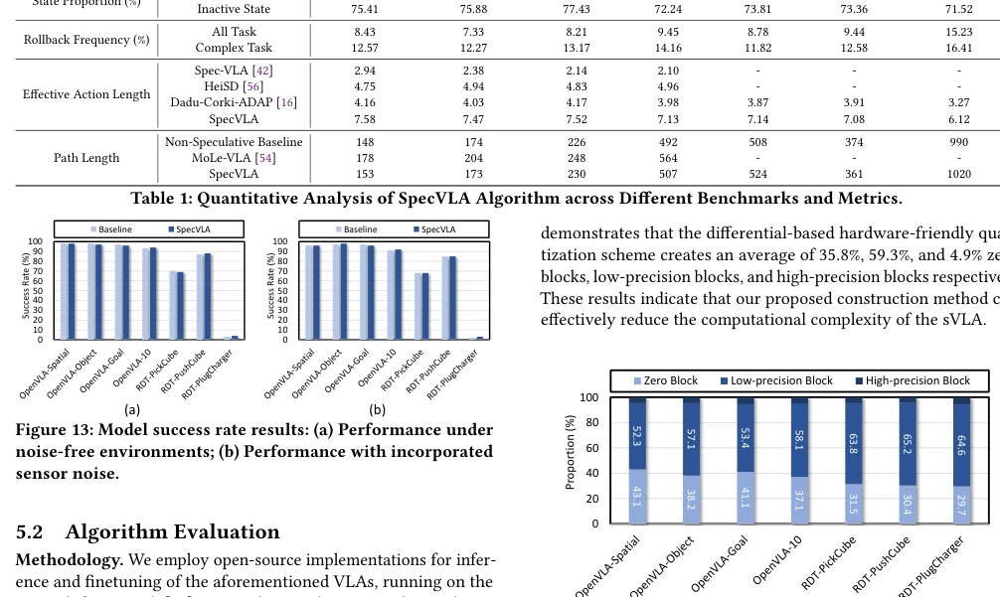

This paper implements a "double-standard" strategy for VLA inference: letting loose during idle periods (long-sequence prediction) and being cautious during busy periods (small model verification). SpecVLA attempts to reduce VLA inference latency by combining algorithmic state awareness with heterogeneous hardware. The highlight is indeed upgrading the pure hardware acceleration approach like Dadu-Corki, incorporating environment state awareness. However, the drawbacks are obvious: reliance on custom hardware modules raises questions about generalizability; sVLA suffers severe accuracy degradation on long sequences, relying entirely on rollback mechanisms as a safety net, what if rollback fails or hardware faults occur? Moreover, "robot-specific hardware" sounds concerning regarding deployment costs, after all not all laboratories can afford FPGA accelerators. Overall, it is a typical "hardware-software integration" work showcasing capabilities, the theory is robust, but actual deployment depends on budget constraints.
VLA models are powerful in embodied AI, but inference latency exceeds 600ms, making real-time control impossible. Existing Dadu-Corki [16] uses heterogeneous systems to hide communication latency, but it ignores robot-environment interaction patterns, resulting in predicting fewer than 4 actions per inference, leaving performance untapped. The authors observe that robot environments have "active" and "inactive" states: during inactive states (e.g., moving a robotic arm), action accuracy requirements are low; during active states (e.g., grasping), precision is mandatory. Existing methods fail to utilize this temporal redundancy and state differences, resulting in either slowness or inaccuracy. Furthermore, while the quantized small model sVLA is fast, long-sequence prediction accuracy collapses, and directly executing VLA and sVLA serially leads to low hardware utilization. Therefore, the core problem is how to shorten end-to-end latency by leveraging state differences and hardware parallelism while maintaining success rates.

Figure 5: Explore environmental state: success rate under different noise patterns.

Figure 6: The latency of SpecVLA and baseline VLA model on A100 GPU.
SpecVLA is an algorithm-system co-design framework overall. On the pipeline, the system first judges the environment state: in the inactive state, it directly lets VLA predict a long sequence (e.g., 5 actions) and execute; in the active state, after VLA prediction, it immediately uses sVLA to verify one by one, rolling back and recalculating upon verification failure. Algorithmic innovations lie in state prediction (based on distance and robotic arm state) and action verification (weighted L1 distance). In terms of model construction, sVLA uses differential residuals and block mixed-precision quantization to compress feature differences of continuous frames, reducing computational load. In terms of hardware architecture, the GPU runs full-precision VLA, while dedicated hardware modules run sVLA and state prediction. The data flow adopts speculative execution, with VLA and sVLA running in parallel without waiting for results. The dedicated hardware integrates preprocessing, a state predictor, and a PE array, reusing distance calculation units through reconfigurable design to reduce on-chip storage movement. Specifically, the preprocessing module blocks residuals, decides quantization bit-width based on absolute value and threshold, and removes zero blocks. The state predictor unifies the distance calculation paths for environment state judgment and action verification, supporting switching between two modes. The PE array adopts a SIMD structure, supporting low-precision block-level matrix multiplication, sharing data through hardwired shifts to alleviate bandwidth bottlenecks. This design significantly boosts sVLA inference speed, and combined with GPU-based VLA prediction, achieves significant end-to-end latency reduction.

Figure 1: Overview of SpecVLA: (a) A task example of a robot; (b) Existing VLA algorithm; (c) SpecVLA paradigm.

Figure 7: The execution process of SpecVLA.

Figure 10: The overview of the SpecVLA heterogeneous ar- chitecture.

Figure 11: The structure of the state predictor. state prediction and action verification share the same distance- computation pipeline. To exploit this, the predictor integrates a uni- fied datapath composed of a subtractor group, value-computation units, an adder tree, a comparator, an OR gate, and multiple multi- plexers. These components are orchestrated through lightweight control signals that dynamically reconfigure the module to support two distinct modes of operation: Action Verification Mode. As shown in Fig. 11(a), when the Pre- dicted Action and Expected Action become available, the subtractor group computes their element-wise differences, which are then forwarded to the value-computation units (each applying absolute- then-multiply or squared operations depending on configurati
Experiments utilized OpenVLA and RDT models, tested on LIBERO and ManiSkill benchmarks. Baselines compared NVIDIA A100 native inference and Dadu-Corki [16]. Metrics primarily focused on end-to-end latency, success rate, and effective action length. Results show SpecVLA achieved 2.9x acceleration compared to A100 and was 1.9x faster than Dadu-Corki, with success rates remaining comparable. Ablation studies indicate sVLA performs well on short sequences, though accuracy drops on long sequences, but this is compensated by the state-aware switching strategy. Although robustness in noisy environments is acceptable, Table 1 also reveals a high rollback frequency in complex tasks (approximately 15%), indicating room for optimization in active state judgment or verification thresholds.

Figure 14: The proportion of zero block, low-precision block and high-precision block in the sVLA model.